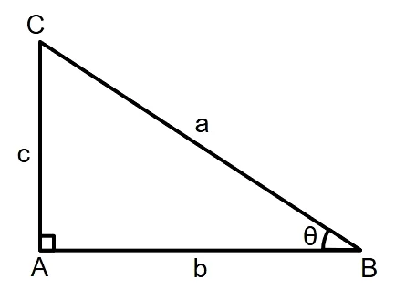
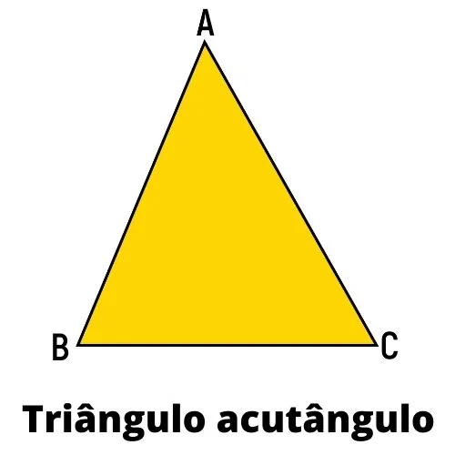
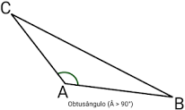
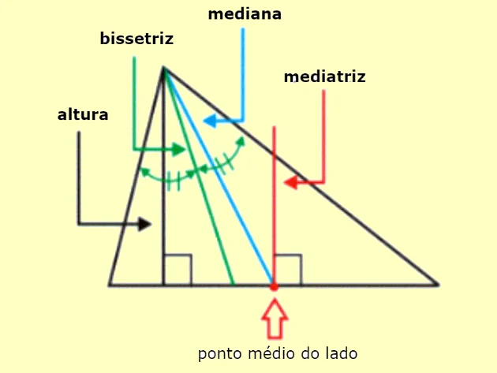
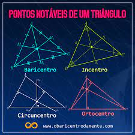
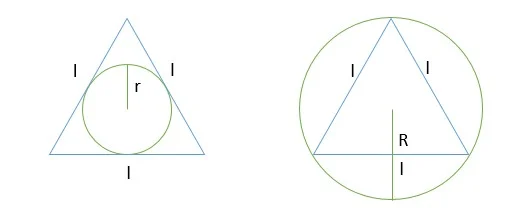
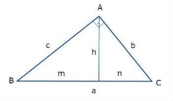
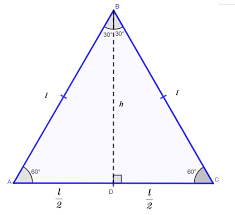
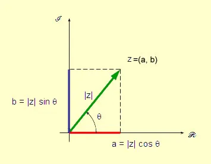

Fórmulas geométricas
\(d = \frac{n \cdot (n-3)}{2} \)
\(S_{i} = 180 \cdot (n - 2) \)
\(S_{e} = 360 \)
\(i+e = 180 \)
\(S_{i} = n \cdot i \)
Triângulos

É considerado triângulo retângulo quando \(a^2 = b^2+c^2\)

É considerado triângulo acutângulo quando \(a^2 < b^2+c^2\)

É considerado triângulo obtusângulo quando \(a^2 > b^2+c^2\)

A altura é a medida da base do triângulo até o último ângulo.
A bissetriz é uma reta que divide um ângulo em dois outros inguais.
A mediana traça uma reta do ângulo \(\alpha\) até o ponto médio do lado oposto.
A mediatriz é uma reta perpendicular ao ponto médio de um lado.
Pontos notáveis do triângulo

Baricentro: intersecção de todas as medianas.
Incentro: intersecção de todas as bissetrizes, que forma o centro da circunferência inscrita do triângulo.
Circuncentro Intersecção de todas as mediatrizes, que forma o centro da circunferência circunscrita do triângulo.
Ortocentro: Intersecção de todas as alturas.
Áreas de triângulos
\(A = \frac{b \cdot h}{2} \)
\(A = \frac{a \cdot b \cdot sen(\alpha)}{2}\)
\(A = \sqrt{p \cdot (p-a) \cdot (p - b) \cdot (p-c)}\) onde p é o semiperímetro, definido por: \(p = \frac{a+b+c}{2}\)
Área do triângulo em função do raio da circunferência inscrita:

\(A = p \cdot r\) o \(r\) (raio da circunferência inscrita) é chamado de apótema.
Área do triângulo em função do raio da circunferência circunscrita do triângulo.
\(A = \frac{a \cdot b \cdot c}{4R}\)
Movimento retilíneo uniformemente variado, MRU
É o movimento que a aceleração é nula, \(a = 0\) e definido por:
\(S = S_{0} + V_{0} \cdot t\)
Movimento retilíneo uniformemente Variado
É todo movimento em que a aceleração é diferente de zero, \(a \neq 0\)
\(S = S_{0} + V_{0} \cdot t + \frac{a \cdot t^2}{2} \)
\(V = V_{0} + a \cdot t\)
\(V^2 = V_{0} + 2 \cdot a \cdot \Delta S\)
A aceleração é definida por:
\(a = \frac{\Delta S}{\Delta t}\)
Leis de Newton
1ª Lei de Newton
Se uma força resultante for igual a zero \(F_{R} = 0\) o corpo tende a manter seu módulo, direção, sentido e sua velocidade vetorial constante.
2ª Lei de Newton
\(F_{R} = m \cdot a\)
A força resultante é igual ao produto da massa e da aceleração.
3ª Lei de Newton
→ Lei de ação e reação.
Toda ação corresponde a uma reação de mesmo módulo, direção, mas de sentidos opostos e que atuam em corpos diferentes.
Em = E_{c} + E_{pg} + E_{pe}
A mecânica é a soma da energia cinética, potencial gravitacional e potencial elástica.
Energia cinética
A energia cinética, ou energia do movimento, é definida por: \(E_{c} = \frac{m \cdot v^2}{2} \)
Energia potencial gravitacional
A energia potencial gravitacional é a energia que é estocada em um corpo em relação à sua altura à Terra, definida por: \(E_{pg} = m \cdot g \cdot h \)
Energia potencial elástica
É a energia estocada em materiais elásticos, definida por: \(E_{pe} = \frac{k \cdot x^2}{2}\)
, onde k é a constante elástica do material e x o tamanho da deformação do objeto.
Semelhança de Triângulos:
→ Dado uma reta que intercepta dois lados de um triânguloe forma um outro, esse será semelhante ao maior.
→ Se a razão de semelhança de dois triângulos é k, logo a razão entre seus elementos homólogos também é k.
Relaçoes métricas no triângulo retângulo

Relações entre os catetos, a altura, a hipotenusa e as projeções do cateto sob a hipotenusa são definidas por:
\(
a \cdot h = c \cdot b \\
h^2 = m \cdot n \\
c^2 = a \cdot m \\
b ^2 = a \cdot n
\)
Triângulo equilátero.

Altura, Área e relações dos raios das circunferências inscritas e circunscritas.
\(
h = \frac{l \sqrt{3}}{2} \\
A = \frac{l^2 \cdot \sqrt{3}}{4} \\
r = \frac{h}{3} \rightarrow apótema \\
R = \frac{2 \cdot h}{3} \rightarrow Raio \ da \ circunferência \ circunscrita \\
R = 2 \cdot r
\)
Fonética e Fonologia
Dígrafo
É a junção de duas letras que forma um só fonema. Ele poode ser consonantal ou vocálico.
Ele pode ser:
Dígrafo consonantal: Encontro de duas letras que correspondem a um fonema de consoante.
Dígrafo vocálico: Uma vogal acompanhadas de m ou n
Dífono
Quando uma só letra corresponde a dois fonemas
Encontro consonantal
Reunião de duas consoantes pronunciáveis que são descritas foneticamente.
Ditongo
É a junçãode uma vogal e uma semivogal na mesma sílaba, ele pode ser:
Crescente: Semi Vogal + Vogal
Decrescente Vogal + Semi vogal
Hiato
É encontro de duas vogais, só que em sílabas diferentes.
Tritongo
É o encontro de duas semivogais e uma vogal na mesma sílaba, a vogal sempre virá entre as semivogais.
Análise combinatória
Permutação
Significa troca, definida por: \(P_{n} = n!\)
Combinação
Quando temos que tomar n elementos p a p.
Definições:
Combinações sem repetição:
\(C_{n, p} = \frac{n!}{p! \cdot (n - p)!} \)
Combinações com repetições, usamos:
\(C_{p, n} = \frac{(n + p - 1)!}{p! \cdot (n -p)!}\)
Arranjo
Quando a ordem dos elementos importam, ou seja um elemento organizado a partir de outro de maneira diferente cria uma nova combinação usamos:
\(A_{n, p} = \frac{n!}{(n - p)!}\)
Produtos notáveis
Os sete produtos notáveis são:
\(
(a + b)^2 = a^2 + 2 \cdot a \cdot b + b^2 \\
(a - b)^2 = a^2 - 2 \cdot a \cdot b + b^2 \\
(a + b) \cdot (a - b) = a^2 - b^2 \\
(a + b)^3 = a^3 + 3 \cdot a^2 \cdot b + 3 \cdot a \cdot b^2 + b ^ 2 \\
(a - b)^3 = a^3 - 3 \cdot a^2 \cdot b + 3 \cdot a \cdot b^2 - b^3 \\
a^3 + b^3 = (a+b) \cdot (a^2 - a \cdot b + b^2) \\
a^3 - b^3 = (a-b) \cdot (a^2 + a \cdot b + b^2)
\)
Números Imaginários
São aqueles que não são definidos pelo conjunto dos números Reais (\(\mathbb{R}\)).
Forma algébrica
\(Z = a + b \cdot i\)
Conjugado de \(\bar{Z}\)
É obtido multiplicando a parte imaginária por -1.
Exemplo:
\(
Z = a + b \cdot i \\
\bar{Z} = a - b \cdot i
\)
Soma, Subtração, Multiplicação e Divisão de números imaginários
São efetuadas como se fossem operações com polinômios, mas na divisão multiplicados pelo conjulgado do denominador.
Exemplo:
\(
Z = a + b \cdot i \\
Z_{2} = c + d \cdot i \\
\frac{Z}{Z_{2}} = \frac{Z \cdot \bar{Z_{2}}}{Z_{2} \cdot \bar{Z_{2}}} = \frac{(a + b \cdot i) \cdot (c - d \cdot i)}{(c + d \cdot i) \cdot (c - d \cdot i)}
\)
Forma trigonométrica

Acima é a representação trigonométrica de um número imaginário.
Onde o eixo das abcissas é o eixo real e das ordanadas o eixo imaginário.
A fórmula da representação trigonométrica é:
\(Z = \rho \cdot (cos(\theta) + i \cdot sin(\theta))\)